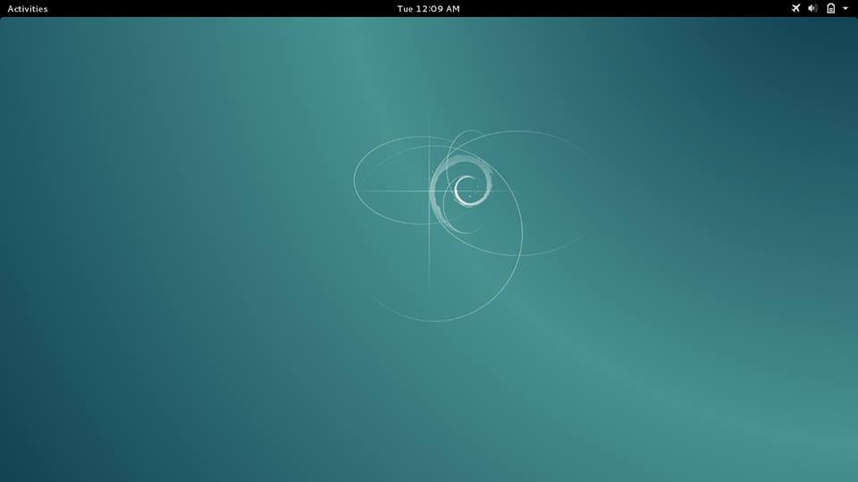
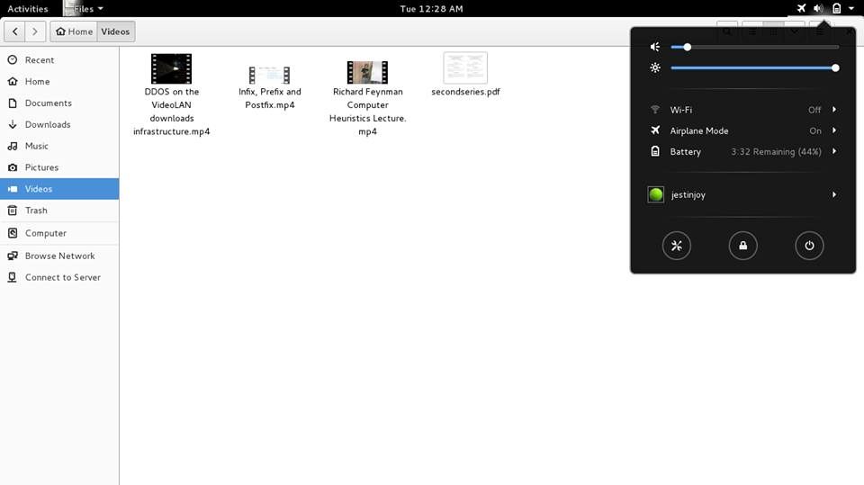
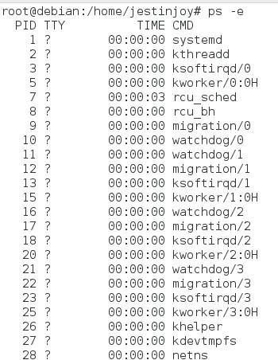

Much awaited Debian 8.0 aka Jessie was released on April 25, 2015. It comes with 5 year promised support from Debian community (upto April/May 2020). Debian 7 "Wheezy" support ends on May 2018. Debian ships with systemd which makes systemd the process id 1 instead of init. Major updatded packages include
- Linux 3.16.7
- GNOME 3.14
- GCC 4.9.2
- LibreOffice 4.3.3
- Iceweasel 31.6.0esr
Upgrading
For upgrading, after adding jessie repos, type in terminal
apt-get dist-upgrade
dist-upgrade in addition to performing the function of upgrade, also intelligently handles changing dependencies with new versions of packages
Its better to do this from the command line by pressing alt-ctrl-f1 and switching to root user. When I did dist-upgrade from GUI, I couldnt unlock the lock screen during upgradation.
Debian Jessie sources.list can be have from Debian site.
  